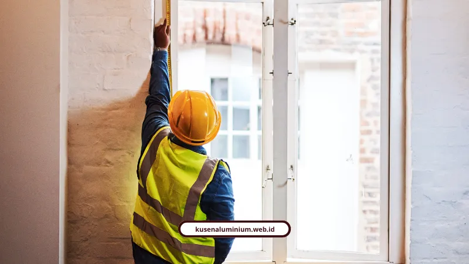
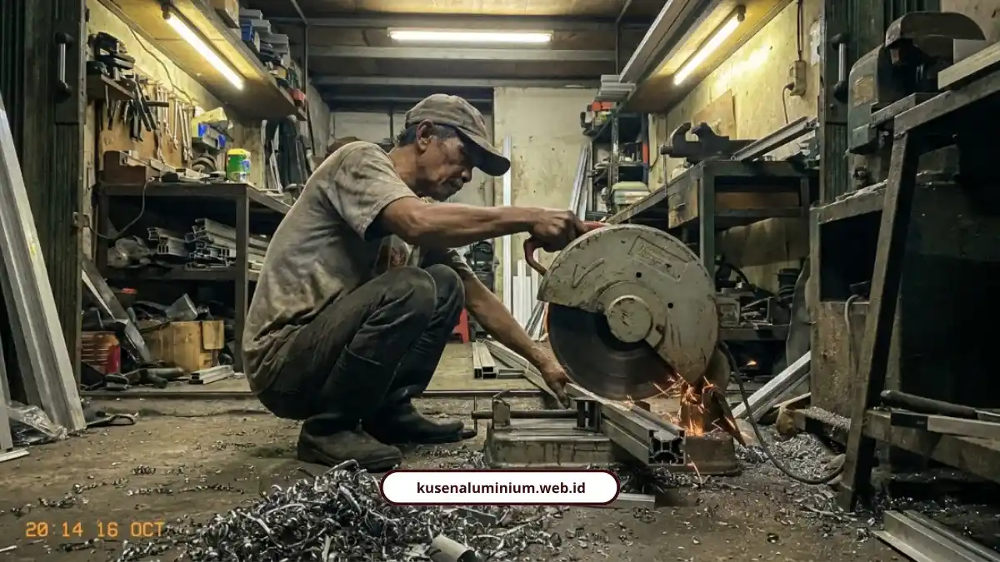

Kusen Aluminium Kota Batu: Presisi 0,5 mm, Bergaransi

📌 Ringkasan Inti
Kusen aluminium di Kota Batu dengan sistem prefabrikasi workshop menghadirkan solusi bukaan presisi 0,5 mm yang tahan hawa dingin, anti rayap, dan kedap air hujan:
- Dipotong dan dirakit menggunakan mesin miter presisi tinggi di workshop dengan toleransi hingga 0,5 mm, menghasilkan sudut sambungan 45 derajat rapat tanpa celah.
- Dipadukan karet weather-seal EPDM dan sealant silikon kedap air hujan untuk meredam suara serta menahan hawa dingin khas pegunungan Batu.
- Perhitungan harga transparan per meter lari: Alexindo Rp150.000–Rp250.000/m' dan kelas premium YKK AP Rp250.000–Rp350.000/m' tanpa biaya tersembunyi.
- Model populer untuk hunian, villa, dan homestay: pintu lipat heavy-duty, jendela casement, sliding 2 daun, dan slim frame kaca besar.
- Melayani seluruh wilayah Kota Batu (Kecamatan Batu, Bumiaji, Junrejo) dengan fasilitas survei & pengukuran ulang gratis serta sertifikat garansi resmi kebocoran dan fungsi kuncian.
Kusen aluminium Batu paling awet dibuat prefabrikasi di workshop dengan presisi 0,5 mm dan karet EPDM. Melayani Kota Batu, kami memberi garansi resmi.
Di bawah ini saya bedah waktu pengerjaan, harga per meter, pilihan merek, sampai garansinya, lengkap dengan kekurangan yang sebaiknya Anda tahu sebelum memesan.
Apa Itu Kusen Prefabrikasi?
Kusen prefabrikasi adalah kusen yang dipotong dan dirakit di workshop, lalu dipasang di lokasi tanpa pemotongan kasar di proyek. Prosesnya memakan 3 sampai 7 hari kerja di workshop dan hanya 1 sampai 2 hari kerja untuk pemasangan.
Yang membuatnya berbeda dari kerja serabutan di lapangan:
- Dipotong mesin miter presisi tinggi dengan toleransi hingga 0,5 mm
- Sudut sambungan miter 45 derajat, rapat tanpa celah
- Pemasangan cepat dan tidak merusak dinding
- Survei dan pengukuran ulang gratis sebelum produksi
Jujur saja, tahap workshop terasa lama buat yang maunya serba cepat. Tapi di situlah presisinya dibayar. Kerja kasar di lokasi biasanya meninggalkan celah, dan celah adalah pintu masuk hawa dingin serta air hujan.

Berapa Harga Kusen Aluminium per Meter?
Kusen merek Alexindo berkisar Rp150.000 sampai Rp250.000 per meter lari. Kelas premium YKK AP berkisar Rp250.000 sampai Rp350.000 per meter lari, tergantung ukuran profil dan jenis finishing.
Hitungannya transparan: kusen dihitung per meter lari (m'), kaca per meter persegi (m²), tanpa biaya tersembunyi. Kalau ingin menghitung sampai rupiah terakhir, biaya pasang kusen per bukaan ditentukan oleh keliling frame dan pilihan finishing.
Kenapa Aluminium, Bukan Kayu?
Aluminium tidak lapuk, tidak dimakan rayap, dan tidak memuai berlebihan, sehingga cocok untuk udara Batu yang dingin dan lembap. Kusen kayu di rumah lama biasanya menyerah pada tiga hal:
- Hawa dingin malam hari yang menyelinap lewat celah
- Kelembapan tinggi yang melapukkan kayu
- Rayap yang menggerogoti dari dalam
Kalau rumah sedang direnovasi menuju konsep minimalis modern, kusen aluminium adalah pengganti yang masuk akal. Yang masih kangen nuansa kayu bisa memilih finishing urat kayu, dan finishing itu tidak bisa dimakan rayap.
Apa Gunanya Sambungan Miter 45 Derajat?
Sambungan miter 45 derajat membuat sudut rangka rapat tanpa celah, sehingga tidak menyimpan kotoran dan tidak mudah bocor. Di atasnya kami pasang karet weather-seal EPDM dan sealant silikon kedap air hujan.
Kombinasi itu juga meredam suara dan menahan hawa dingin serta angin kencang khas pegunungan Batu.
Paket Kusen Prefabrikasi Hunian & Villa Kota Batu
Nikmati fasilitas survei dan pengukuran ulang gratis langsung ke lokasi proyek Anda di seluruh area Kota Batu dan sekitarnya, lengkap dengan sertifikat garansi resmi pengerjaan tertulis.
Profil 3 Inci atau 4 Inci?
Profil 3 inci cocok untuk pintu dan jendela rumah minimalis standar, sedangkan profil 4 inci untuk bukaan tinggi, gedung komersial, atau ruko.
- 3 inci: ramping dan ekonomis
- 4 inci: frame lebih tebal dan kokoh
Soal merek, pilihannya kami bagi begini:
- YKK AP: kelas premium, tebal profil 1,35 sampai 1,46 mm, sealing rapat, kedap suara maksimal, tahan korosi di lingkungan lembap
- Alexindo: kelas menengah, tebal 1,0 sampai 1,15 mm, seimbang antara kekuatan struktur dan anggaran
- Forta, Superex, Alfalum: opsi berstandar SNI untuk kebutuhan proyek yang variatif
Kekurangannya jelas: YKK AP lebih mahal, dan Alexindo lebih tipis. Jadi keputusannya bukan soal mana yang paling hebat, tapi mana yang pas dengan ukuran bukaan dan anggaran.
Model Apa yang Cocok untuk Villa?
Untuk villa dan homestay di Batu, model yang populer adalah pintu lipat heavy-duty, jendela casement, jendela sliding 2 daun, dan jendela slim frame berkaca besar.
- Pintu lipat (folding door): bukaan maksimal untuk teras atau pembatas taman, dengan roda stainless steel anti-selip
- Casement dan sliding 2 daun: crescent lock rapat dan engsel kokoh anti-kendur
- Slim frame kaca besar: cahaya alami maksimal dan tampilan modern eksklusif
Pilihan warnanya empat: Hitam Anodized atau Doff untuk gaya industrial, Putih Coating untuk gaya Skandinavia, Cokelat Dark dan Urat Kayu untuk nuansa hangat, serta Silver Anodized.
Tim Ahli Renovasi Dewape Design menyoroti dua hal yang sering dilupakan. Aksesoris stainless steel pada handle dan kunci harus tahan karat, dan warna perlu disesuaikan dengan tema bangunan.
"Di kawasan dataran tinggi Kota Batu dengan udara dingin dan kelembapan konstan, sambungan miter 45 derajat presisi serta karet EPDM weather-seal adalah benteng utama agar bukaan bangunan bebas bocor dan kedap dari hawa dingin malam hari."
Bagaimana Kusen Dikirim ke Batu?
Kusen dikirim dari Malang langsung ke lokasi proyek. Melayani Kota Batu, kami menjangkau Kecamatan Batu, Bumiaji, dan Junrejo.
Soal packing kayu, pilihan truk, dan asuransi, pengiriman kusen Batu kami rancang supaya profil tidak baret di jalan. Sebelum berangkat, setiap rangka juga melewati kontrol kualitas kusen di workshop.
Apa Garansi Kusen Batu dari Kami?
Kami memberi sertifikat garansi resmi untuk kebocoran dan fungsi kuncian, ditambah survei lokasi dan pengukuran ulang gratis di Kota Batu dan Malang Raya.
- Survei dan pengukuran ulang gratis
- RAB transparan tanpa biaya tersembunyi
- Sertifikat garansi kebocoran dan fungsi kunci
- Melayani Kecamatan Batu, Bumiaji, dan Junrejo
Melayani Songgokerto, Temas, Sumberejo, Giripurno, Torongrejo, Pendem, Tlekung, Beji, Dadaprejo, Mojorejo, sampai Sumber Brantas, kami memasang bukaan untuk rumah tinggal, villa, homestay, dan ruko.
Apa Kata Pelanggan di Batu?
Pelanggan paling sering menyebut tiga hal: hasil yang rapi, kedap hawa dingin, dan RAB yang jelas.
"Renovasi rumah lama kami menjadi tampak modern seperti rumah baru! Tim sangat profesional, cepat, dan harga kompetitif. Sudah 3 tahun dan kualitasnya tetap terjaga."
— Maya Sari, pemilik rumah di Batu"Pemasangan pintu lipat aluminium YKK AP di villa Batu sangat presisi. Rel lancar, rapi, dan benar-benar kedap dari hawa dingin luar."
— Pemilik villa di Batu"Proyek kantor kami selesai dengan kualitas luar biasa. Transparansi RAB dan laporan progres berkala membuat kami tenang selama proses pembangunan berlangsung."
— Rizky Hermawan, Manager PT Maju BersamaKusen aluminium prefabrikasi menjawab tiga masalah bangunan di Batu sekaligus: dingin, lembap, dan rayap. Presisi 0,5 mm, sambungan miter 45 derajat, dan karet EPDM membuat hasilnya rapat dan awet.
Ringkasnya:
- Workshop 3 sampai 7 hari kerja, pasang 1 sampai 2 hari kerja
- Alexindo Rp150.000 sampai Rp250.000 per meter lari, YKK AP Rp250.000 sampai Rp350.000 per meter lari
- Garansi resmi untuk kebocoran dan fungsi kuncian
Lihat hasil kerja kami di galeri proyek, lalu hitung kebutuhan Anda lewat estimator biaya. Setelah itu, pesan survei lokasi gratis lewat WhatsApp resmi kami.
Pertanyaan Seputar Kusen Aluminium Kota Batu
Tidak. Survei lokasi dan pengukuran ulang gratis untuk wilayah Kota Batu dan Malang Raya.
Pengerjaan di workshop memakan 3 sampai 7 hari kerja, lalu pemasangan di lokasi selesai dalam 1 sampai 2 hari kerja.
Sertifikat garansi resmi kami mencakup kebocoran dan fungsi kuncian.